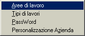
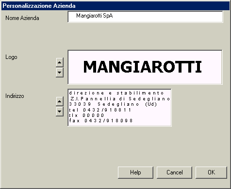

Vedi Cap. Aree di lavoro
Vedi Cap. Aree di lavoro

Questa opzione serve per personalizzare i documenti che vengono composti dalle applicazioni comprese nel sistema 'Lancio'.
Sono previsti tre elementi di personalizzazione:
Si tratta di una stringa di testo che verrà riportata nella prima riga dei rapporti di calcolo.
Si può inserire nella casella di testo una qualunque stringa, di lunghezza non superiore a 26 caratteri.
Si tratta di un'immagine di tipo BMP che verrà inserita nell'intestazione di pagina dei rapporti di calcolo in formato Word.
Le immagini da selezionare per la personalizzazione in corso vengono selezionate dal programma tra quelle di nome logo*.bmp presenti nella sottodirectory Arch della directory nella quale è stato installato il sistema Lancio.
Ne consegue che se si vuole generare un nuovo logo e farlo riconoscere dal sistema Lancio, bisogna costruirlo con un adatto programma di gestione delle immagini, nominarlo logo*.bmp (facendo attenzione a non creare nomi duplicati rispetto a quelli già esistenti), ed infine salvarlo nella directory suddetta.
Si accederà infine al presente sottomenu del sistema Lancio per selezionare permanentemente il logo generato.
Si tratta di un'immagine di tipo BMP che verrà inserita nell'intestazione di pagina dei rapporti di calcolo in formato Word.
Vale tutto quanto detto sopra per il logo, con l'eccezione che il file immagine deve chiamarsi indir*.bmp.